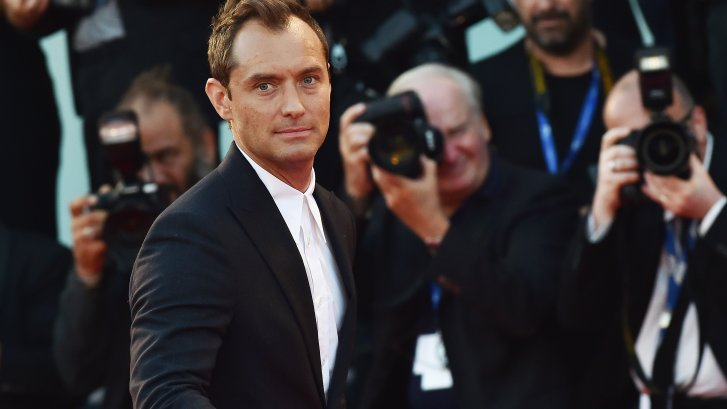

Jude Law cast as Albus Dumbledore in next Fantastic Beasts film
The two-time Academy Award nominee will portray Dumbledore long before he became Headmaster of Hogwarts School of Witchcraft and Wizardry.
Acclaimed actor Jude Law will play Albus Dumbledore in the sequel to Fantastic Beasts.

The second film in the Fantastic Beasts series will show Dumbledore decades before he became Headmaster at Hogwarts School of Witchcraft and Wizardry.
At this point in the story he is the wizarding school’s Transfiguration professor and a contemporary of Gellert Grindelwald – the Dark wizard we met in Fantastic Beasts and Where to Find Them, played by Johnny Depp.
Dumbledore was referenced in the first film, when it was revealed that Newt Scamander was expelled from Hogwarts because of an accident with a magical creature. It was Dumbledore who argued against his expulsion.
In the latest edition of the Hogwarts Library book Fantastic Beasts and Where to Find Them, Newt says in his foreword that, ‘Albus Dumbledore was something more than a schoolteacher to me,’ but to reveal more would breach the Official Magical Secrets Act as well as his former teacher’s confidence.
The stage is set for Dumbledore to make his presence known and returning director David Yates said, ‘Jude Law is a phenomenally talented actor whose work I’ve long admired and I’m looking forward to finally having the opportunity to work with him. I know he will brilliantly capture all the unexpected facets of Albus Dumbledore as J.K. Rowling reveals this very different time in his life.’
Jude Law attends the premiere of The Young Pope
Jude Law’s acting career spans TV, film and theatre. He has been nominated for two Academy Awards, three Golden Globes and two BAFTAs – winning a BAFTA for Best Actor in a Supporting Role for the 1999 thriller The Talented Mr Ripley. He has also been nominated for three Olivier Awards and two Tony Awards.
Law first came to prominence in the 1997 film Wilde, where he starred as the poet Lord Alfred Douglas opposite Stephen Fry’s Oscar Wilde.
Law has worked with several Harry Potter actors throughout his career. In Martin Scorsese’s animated feature Hugo, for instance, Law worked alongside Helen McCrory (Narcissa Malfoy), Frances De La Tour (Madame Maxime) and Richard Griffiths (Vernon Dursley). He also appeared in The Grand Budapest Hotel with Ralph Fiennes.
Law has even worked with Johnny Depp – Dumbledore’s Dark wizard adversary Grindelwald. Law, Depp and Fantastic Beasts actor Colin Farrell all played the same character in Terry Gilliam’s The Imaginarium of Doctor Parnassus.
Law’s most recent work saw a move into TV, and a starring role in the HBO drama The Young Pope.
J.K. Rowling made her screenwriting debut with Fantastic Beasts and Where to Find Them and has also written the screenplay for the second movie.
The film marked a start of a new era of the wizarding world, set decades before Harry Potter’s adventures at Hogwarts. Its sequel takes the story deeper into an increasingly dark time for the wizarding world, where Newt and our other heroes must decide on their allegiances.
Five films are planned in the franchise, with David Yates returning as director.
The sequel to Fantastic Beasts is slated for release 16 November 2018, and filming begins this summer.
Retourner à l'acceuil